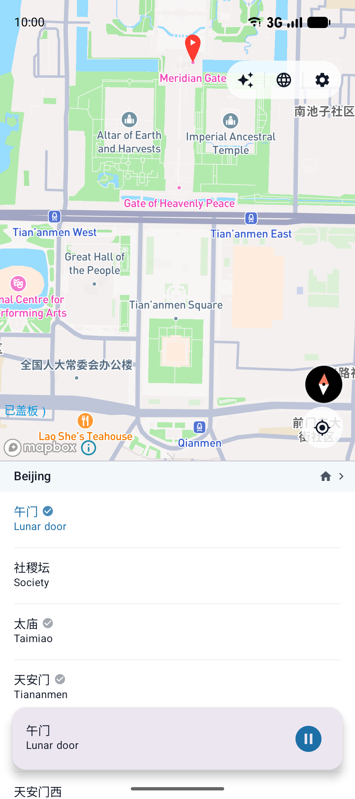

AI Audio Tour Guide for China
Every Place in China


Every Place in China
Has a Story.
ChinaWalk is CityYoYo's sister app, built for travelers exploring China. Tap any place — a landmark, a hutong, a teahouse — and hear an AI-narrated story in your language. No VPN. No curated shortlist. No guidebook required.
🔓 Works in China without a VPN
Free · iOS & Android · English, 中文, 한국어, Español, Português, Français
